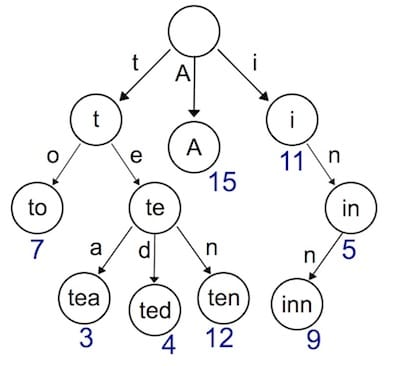
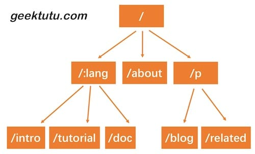

Go语言动手写Web框架 - Gee第三天 前缀树路由Router
7天用 Go语言 从零实现Web框架教程(7 days implement golang web framework from scratch tutorial)，用 Go语言/golang 动手写Web框架，从零实现一个Web框架，以 Gin 为原型从零设计一个Web框架。本文介绍了如何用 Trie 前缀树实现路由 Route。支持简单…
本文是 7天用Go从零实现Web框架Gee教程系列的第三篇。
- 使用 Trie 树实现动态路由(dynamic route)解析。
- 支持两种模式
:name和*filepath，代码约150行。
Trie 树简介
之前，我们用了一个非常简单的map结构存储了路由表，使用map存储键值对，索引非常高效，但是有一个弊端，键值对的存储的方式，只能用来索引静态路由。那如果我们想支持类似于/hello/:name这样的动态路由怎么办呢？所谓动态路由，即一条路由规则可以匹配某一类型而非某一条固定的路由。例如/hello/:name，可以匹配/hello/geektutu、hello/jack等。
动态路由有很多种实现方式，支持的规则、性能等有很大的差异。例如开源的路由实现gorouter支持在路由规则中嵌入正则表达式，例如/p/[0-9A-Za-z]+，即路径中的参数仅匹配数字和字母；另一个开源实现httprouter就不支持正则表达式。著名的Web开源框架gin 在早期的版本，并没有实现自己的路由，而是直接使用了httprouter，后来不知道什么原因，放弃了httprouter，自己实现了一个版本。

实现动态路由最常用的数据结构，被称为前缀树(Trie树)。看到名字你大概也能知道前缀树长啥样了：每一个节点的所有的子节点都拥有相同的前缀。这种结构非常适用于路由匹配，比如我们定义了如下路由规则：
- /:lang/doc
- /:lang/tutorial
- /:lang/intro
- /about
- /p/blog
- /p/related
我们用前缀树来表示，是这样的。

HTTP请求的路径恰好是由/分隔的多段构成的，因此，每一段可以作为前缀树的一个节点。我们通过树结构查询，如果中间某一层的节点都不满足条件，那么就说明没有匹配到的路由，查询结束。
接下来我们实现的动态路由具备以下两个功能。
- 参数匹配
:。例如/p/:lang/doc，可以匹配/p/c/doc和/p/go/doc。 - 通配
*。例如/static/*filepath，可以匹配/static/fav.ico，也可以匹配/static/js/jQuery.js，这种模式常用于静态服务器，能够递归地匹配子路径。
Trie 树实现
首先我们需要设计树节点上应该存储那些信息。
type node struct {
pattern string // 待匹配路由，例如 /p/:lang
part string // 路由中的一部分，例如 :lang
children []*node // 子节点，例如 [doc, tutorial, intro]
isWild bool // 是否精确匹配，part 含有 : 或 * 时为true
}
与普通的树不同，为了实现动态路由匹配，加上了isWild这个参数。即当我们匹配 /p/go/doc/这个路由时，第一层节点，p精准匹配到了p，第二层节点，go模糊匹配到:lang，那么将会把lang这个参数赋值为go，继续下一层匹配。我们将匹配的逻辑，包装为一个辅助函数。
// 第一个匹配成功的节点，用于插入
func (n *node) matchChild(part string) *node {
for _, child := range n.children {
if child.part == part || child.isWild {
return child
}
}
return nil
}
// 所有匹配成功的节点，用于查找
func (n *node) matchChildren(part string) []*node {
nodes := make([]*node, 0)
for _, child := range n.children {
if child.part == part || child.isWild {
nodes = append(nodes, child)
}
}
return nodes
}
对于路由来说，最重要的当然是注册与匹配了。开发服务时，注册路由规则，映射handler；访问时，匹配路由规则，查找到对应的handler。因此，Trie 树需要支持节点的插入与查询。插入功能很简单，递归查找每一层的节点，如果没有匹配到当前part的节点，则新建一个，有一点需要注意，/p/:lang/doc只有在第三层节点，即doc节点，pattern才会设置为/p/:lang/doc。p和:lang节点的pattern属性皆为空。因此，当匹配结束时，我们可以使用n.pattern == ""来判断路由规则是否匹配成功。例如，/p/python虽能成功匹配到:lang，但:lang的pattern值为空，因此匹配失败。查询功能，同样也是递归查询每一层的节点，退出规则是，匹配到了*，匹配失败，或者匹配到了第len(parts)层节点。
func (n *node) insert(pattern string, parts []string, height int) {
if len(parts) == height {
n.pattern = pattern
return
}
part := parts[height]
child := n.matchChild(part)
if child == nil {
child = &node{part: part, isWild: part[0] == ':' || part[0] == '*'}
n.children = append(n.children, child)
}
child.insert(pattern, parts, height+1)
}
func (n *node) search(parts []string, height int) *node {
if len(parts) == height || strings.HasPrefix(n.part, "*") {
if n.pattern == "" {
return nil
}
return n
}
part := parts[height]
children := n.matchChildren(part)
for _, child := range children {
result := child.search(parts, height+1)
if result != nil {
return result
}
}
return nil
}
Router
Trie 树的插入与查找都成功实现了，接下来我们将 Trie 树应用到路由中去吧。我们使用 roots 来存储每种请求方式的Trie 树根节点。使用 handlers 存储每种请求方式的 HandlerFunc 。getRoute 函数中，还解析了:和*两种匹配符的参数，返回一个 map 。例如/p/go/doc匹配到/p/:lang/doc，解析结果为：{lang: "go"}，/static/css/geektutu.css匹配到/static/*filepath，解析结果为{filepath: "css/geektutu.css"}。
day3-router/gee/router.go
type router struct {
roots map[string]*node
handlers map[string]HandlerFunc
}
// roots key eg, roots['GET'] roots['POST']
// handlers key eg, handlers['GET-/p/:lang/doc'], handlers['POST-/p/book']
func newRouter() *router {
return &router{
roots: make(map[string]*node),
handlers: make(map[string]HandlerFunc),
}
}
// Only one * is allowed
func parsePattern(pattern string) []string {
vs := strings.Split(pattern, "/")
parts := make([]string, 0)
for _, item := range vs {
if item != "" {
parts = append(parts, item)
if item[0] == '*' {
break
}
}
}
return parts
}
func (r *router) addRoute(method string, pattern string, handler HandlerFunc) {
parts := parsePattern(pattern)
key := method + "-" + pattern
_, ok := r.roots[method]
if !ok {
r.roots[method] = &node{}
}
r.roots[method].insert(pattern, parts, 0)
r.handlers[key] = handler
}
func (r *router) getRoute(method string, path string) (*node, map[string]string) {
searchParts := parsePattern(path)
params := make(map[string]string)
root, ok := r.roots[method]
if !ok {
return nil, nil
}
n := root.search(searchParts, 0)
if n != nil {
parts := parsePattern(n.pattern)
for index, part := range parts {
if part[0] == ':' {
params[part[1:]] = searchParts[index]
}
if part[0] == '*' && len(part) > 1 {
params[part[1:]] = strings.Join(searchParts[index:], "/")
break
}
}
return n, params
}
return nil, nil
}
Context与handle的变化
在 HandlerFunc 中，希望能够访问到解析的参数，因此，需要对 Context 对象增加一个属性和方法，来提供对路由参数的访问。我们将解析后的参数存储到Params中，通过c.Param("lang")的方式获取到对应的值。
day3-router/gee/context.go
type Context struct {
// origin objects
Writer http.ResponseWriter
Req *http.Request
// request info
Path string
Method string
Params map[string]string
// response info
StatusCode int
}
func (c *Context) Param(key string) string {
value, _ := c.Params[key]
return value
}
day3-router/gee/router.go
func (r *router) handle(c *Context) {
n, params := r.getRoute(c.Method, c.Path)
if n != nil {
c.Params = params
key := c.Method + "-" + n.pattern
r.handlers[key](c)
} else {
c.String(http.StatusNotFound, "404 NOT FOUND: %s\n", c.Path)
}
}
router.go的变化比较小，比较重要的一点是，在调用匹配到的handler前，将解析出来的路由参数赋值给了c.Params。这样就能够在handler中，通过Context对象访问到具体的值了。
单元测试
func newTestRouter() *router {
r := newRouter()
r.addRoute("GET", "/", nil)
r.addRoute("GET", "/hello/:name", nil)
r.addRoute("GET", "/hello/b/c", nil)
r.addRoute("GET", "/hi/:name", nil)
r.addRoute("GET", "/assets/*filepath", nil)
return r
}
func TestParsePattern(t *testing.T) {
ok := reflect.DeepEqual(parsePattern("/p/:name"), []string{"p", ":name"})
ok = ok && reflect.DeepEqual(parsePattern("/p/*"), []string{"p", "*"})
ok = ok && reflect.DeepEqual(parsePattern("/p/*name/*"), []string{"p", "*name"})
if !ok {
t.Fatal("test parsePattern failed")
}
}
func TestGetRoute(t *testing.T) {
r := newTestRouter()
n, ps := r.getRoute("GET", "/hello/geektutu")
if n == nil {
t.Fatal("nil shouldn't be returned")
}
if n.pattern != "/hello/:name" {
t.Fatal("should match /hello/:name")
}
if ps["name"] != "geektutu" {
t.Fatal("name should be equal to 'geektutu'")
}
fmt.Printf("matched path: %s, params['name']: %s\n", n.pattern, ps["name"])
}
使用Demo
看看框架使用的样例吧。
day3-router/main.go
func main() {
r := gee.New()
r.GET("/", func(c *gee.Context) {
c.HTML(http.StatusOK, "<h1>Hello Gee</h1>")
})
r.GET("/hello", func(c *gee.Context) {
// expect /hello?name=geektutu
c.String(http.StatusOK, "hello %s, you're at %s\n", c.Query("name"), c.Path)
})
r.GET("/hello/:name", func(c *gee.Context) {
// expect /hello/geektutu
c.String(http.StatusOK, "hello %s, you're at %s\n", c.Param("name"), c.Path)
})
r.GET("/assets/*filepath", func(c *gee.Context) {
c.JSON(http.StatusOK, gee.H{"filepath": c.Param("filepath")})
})
r.Run(":9999")
}
使用curl工具，测试结果。
$ curl "http://localhost:9999/hello/geektutu"
hello geektutu, you're at /hello/geektutu
$ curl "http://localhost:9999/assets/css/geektutu.css"
{"filepath":"css/geektutu.css"}
白话复盘：前缀树为什么适合动态路由
先看普通 map 的局限
静态路由可以直接用完整路径查表，但 /hello/tom 和 /hello/jack 是两个不同字符串，无法直接命中注册时的 /hello/:name。如果每次都遍历所有路由逐个比较，路由越多就越慢，也难以表达通配符优先级。
前缀树把路径按 / 切成片段。例如 /hello/:name 会变成 hello、:name 两层节点。很多路由拥有共同前缀时，它们会共享树的上半部分；匹配请求时只需沿路径逐层向下，而不是扫描整张路由表。
匹配过程拆开看
以 /assets/css/main.css 为例：
- 先把请求路径切成
assets、css、main.css。 - 根节点找到静态子节点
assets。 - 如果路由注册为
/assets/*filepath，*filepath会吞掉余下所有片段。 - 路由器把
filepath=css/main.css写入Context.Params。 - 最终仍用匹配到的完整路由模式和请求方法，从 handlers 表中取出处理函数。
:name 只匹配一个片段，*filepath 匹配剩余全部片段，并且只能出现在路径末尾。静态节点通常应比通配节点更具体；如果同一层存在可能冲突的模式，成熟框架会在注册阶段检查并报错，本教程只实现了核心规则。
为什么树中不直接保存处理函数
教程把“路径匹配”和“方法到处理函数的映射”分开：树负责找出路由模式，handlers map 负责区分 GET、POST 等方法。这样同一个路径结构可以被多个 HTTP 方法复用，也让两个职责更清晰。
容易踩坑与自测
/p/:lang/doc中:lang不会跨越/；请求/p/go/intro/doc不应命中。- 通配符捕获到的是原始路径片段，拿去访问本地文件前仍要做清理和目录边界检查。
- 给
/hello/:name、/hello/static、/assets/*filepath各写测试，特别检查静态路径和动态路径同时存在时的选择是否符合预期。